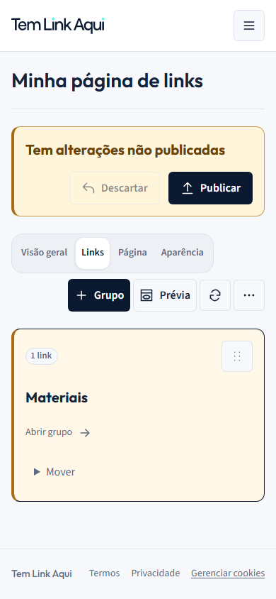

Grupos compactos e busca opcional
Capturas reais da implementação com dados de teste. A busca começa desativada e, quando ativada, aparece nas duas prévias. As imagens não são interativas.

Grupos · celular — captura da aplicação.Abrir grupos no aplicativo local · Ver validação e reversão